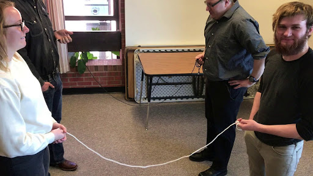

Rational Tangles: Groups in two different ways.
M 111
Oxford College of Emory University Tien Chih
The Rules
Starting Position
The "starting position" consists of two parallel ropes, both parallel to the "front."
The Rules
Rotate (R)
To "rotate", all 4 people rotate in a counter clockwise fashion.

The Rules
Twist (T)
To "twist", the right two people switch, with the "front" person going over, and the "back" person going under.

Practice
- Perform \(T\).
- Follow that up with \(RT\).
- What do we notice?
In Groups!
- Can you revert \(TT\)?
- Can you revert \(TTT\)?
- Can you revert \(TTTT\)?
- Can you conjecture a general way to revert \(T^n\)?
Arithmetic
Starting Position
Associated the starting position with "\(0\)".
Arithmetic
Rotate (R)
Associate "rotate" with taking the negative reciprocal.
(By convention \(-\frac{1}{0}=\infty, -\frac{1}{\infty}=0\).)
The Rules
Twist (T)
Associate "twist" with adding 1.
Practice
- Perform \(T\), what number is this?
- Follow that up with \(RT\), NOW what number is this?
- What about \((TT)(RTRTT)\)?
Notice
- Perform \(TT\), take a picture of the resulting knot.
- Perform \(TTTRTRTR\), take a picture of the resulting knot. What is the value of this knot?
- How do the values of these knots compare? How about the knots themselves?
In Groups!
- Can you create the tangle associated with \(-\frac{2}{5}\)?
- Can you revert back to the original position?
- Take turns picking rational numbers, can you get to those rational numbers?
- Can you revert from those numbers to the starting position?
Notice
Can you revert any rational number back to zero? (Induction?)
Notice
Let \(h(x)\) be a function, and let \(g(x)=-\frac{1}{x}\). What is \[g(g(h(x)))?\] What does this tell us about \(W(R)(R)\) (where \(W\) is some product of \(R, T\))?
Notice
Let \(h(x)\) be a function, and let \(g(x)=-\frac{1}{x}\), and let \(f(x)=x+1\). What is \[f(g(f(g(f(g(f(h(x))))))))?\] What does this tell us about \(W(T)(RTRTRT) \) (where \(W\) is some product of \(R, T\))?
Synthesize
How could we invert \[TTRTRTTT?\]
Groups
A Group is a set \(G\) with a binary operation \(*\) such that:
- \(*\) is associative.
- For any \(g,h\in G\), it follows that \(g*h\in G\).
- There is an identity element \(e\in G\) so that for any \(g\in G\), we have \(eg=g=ge\).
- For any \(g\in G\), there is a \(g^{-1}\in G\) so that \(gg^{-1}=e\).
Groups
A Group is a set \(G\) with a binary operation \(*\) such that:
- \(*\) is associative.
- For any \(g,h\in G\), it follows that \(g*h\in G\).
- There is an identity element \(e\in G\) so that for any \(g\in G\), we have \(eg=g=ge\).
- For any \(g\in G\), there is a \(g^{-1}\in G\) so that \(gg^{-1}=e\).
\(R, T\) generate a group: \(\langle R, T : R^2=TRTRTRT=e \rangle.\)